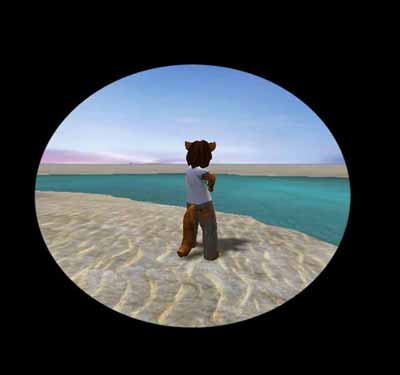

Tamearia Teleport Effect
This is the teleporter class for Tamearia. Instead of just suddenly teleporting the player, it has a cartoonish collapsing/expanding circle effect.
First, the teleporter itself:
class FadeOutTeleporter extends TameariaObject placeable; var() edfindable FadeOutTeleporter Destination; var Pawn Shawna; simulated function PostBeginPlay() { super.PostBeginPlay(); // TAMGame is set in the superclass TameariaObject. } event Touch(Actor Other) { if(Other == none || Destination == none) return; if(Pawn(Other) != none && !Other.IsA('Vehicle')) { TAMGame.TeleportingPlayer(self); // Tells the game to start the fade out. Shawna = Pawn(Other); } } function TeleportHer() // Called through the Gametype from the HUD once the screen is faded out completely. { local rotator NewRot; Shawna.SetLocation(Destination.Location); NewRot = Destination.Rotation; NewRot.Roll = 0; Shawna.SetRotation(NewRot); } defaultproperties { bCollideActors=True bDirectional=True }
Next, the code in the GameType:
class TameariaGame extends GameInfo HideDropDown CacheExempt config(Tamearia); var Pawn Shawna; var FadeOutTeleporter FadeOutTeleporter; function TeleportingPlayer(FadeOutTeleporter FOT) // When the player hits a teleporter, stop them. { FadeOutTeleporter = FOT; bDrawTeleport = true; // Tell the HUD to start the fade. Shawna.GroundSpeed = 0; } function DoTheTeleport() // Once the HUD is faded, tell the teleporter to teleport the player. { FadeOutTeleporter.TeleportHer(); } function FinishedTeleportingPlayer() // Once the fade in is complete, allow the player to move. { Shawna.GroundSpeed = Shawna.default.GroundSpeed; }
Then, the final part of the script in the HUD:
class TameariaHUD extends HudBase config(TameariaUser); var TameariaGame TAMGame; var float TeleportPos; var bool bDrawTeleport, bReverseTeleportDraw; function PostBeginPlay() { TAMGame = TameariaGame(Level.Game); Super.PostBeginPlay(); } function DrawHUD(Canvas C) { C.SetDrawColor(255,255,255,255); if(TAMGame.bDrawTeleport) // If the gametype is set to teleport, acknowledge it and do the fade. { bDrawTeleport = true; TAMGame.bDrawTeleport= false; } if(bDrawTeleport) { C.SetPos(C.SizeX*TeleportPos,C.SizeY*TeleportPos); // Draw the texture with the alpha'd hole cut out of it. C.DrawTileScaled(Material'TameariaTextures.TeleportHUDEffect', (-(TeleportPos-0.5))*(C.ClipX*2/512),(-(TeleportPos-0.5))*(C.ClipY*2/512)); // Draw borders around the alpha'd hole texture. if(TeleportPos >= -0.1) { C.SetPos(0,0); C.DrawTile(material'UCGeneric.Black',TeleportPos*C.SizeX,C.SizeY,0,0,0,0); C.SetPos(0,0); C.DrawTile(material'UCGeneric.Black',C.SizeX,TeleportPos*C.SizeY,0,0,0,0); C.SetPos((TeleportPos*C.SizeX)+(-(TeleportPos-0.5))*(C.SizeX*2),0); C.DrawTile(material'UCGeneric.Black',C.SizeX*TeleportPos,C.SizeY,0,0,0,0); C.SetPos(0,C.SizeY-(C.SizeY*TeleportPos)); C.DrawTile(material'UCGeneric.Black',C.SizeX,C.SizeY*TeleportPos,0,0,0,0); } } } function tick(float DeltaTime) { if(bDrawTeleport) { if(!bReverseTeleportDraw) TeleportPos += DeltaTime; // Circle collapsing. else TeleportPos -= DeltaTime; // Circle expanding. if(TeleportPos > 0.5) // If the circle is collapsed, tell the gametype to teleport the player, and expand the circle. { bReverseTeleportDraw = true; TAMGame.DoTheTeleport(); } if(bReverseTeleportDraw && TeleportPos < 0.25) // Let the player move a bit before the circle is done expanding. TAMGame.FinishedTeleportingPlayer(); if(TeleportPos < -0.5) // Reset everything once the teleport is finished. { TeleportPos = -0.5; bReverseTeleportDraw = False; bDrawTeleport = false; } } } defaultproperties { TeleportPos=-0.5 }
